Trang chủ / Chuyên đề 7: Hồ Sơ Các Chủng Tộc / Kỳ 62
Chuyên đề 7 · Kỳ 62 / 90
CỤM SAO TUA RUA (PLEIADES / MANAHAI / M45) & HYADES
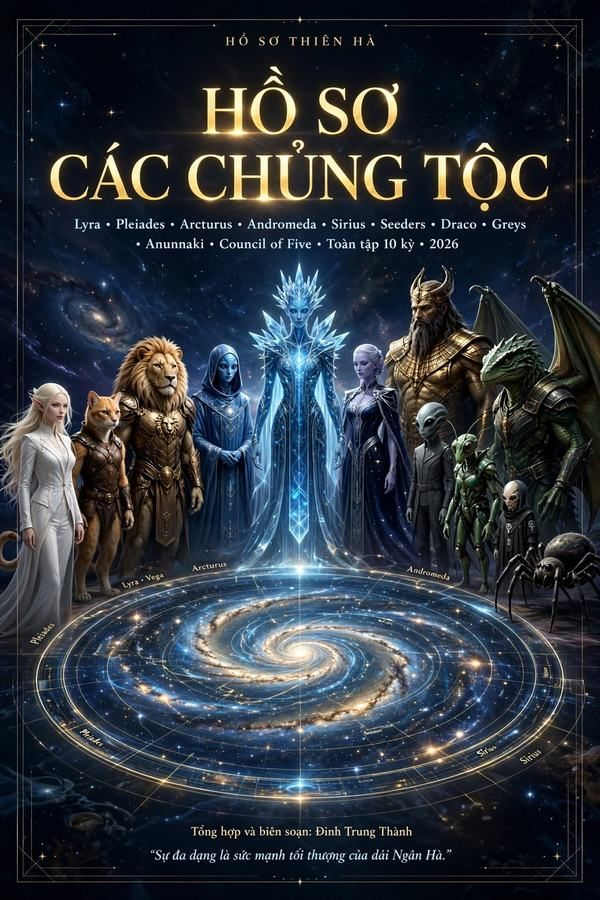
Kỳ này trình bày hồ sơ sinh học của 12 chủng tộc thuộc khu vực Cụm Sao Tua Rua (Pleiades / Manahai / M45) & Hyades. Mỗi hồ sơ gồm hình dáng, chiều cao, đặc điểm sinh học – giác quan, và vai trò trong bức tranh thiên hà.
Errahel / Ahel Pleiadean (Hành tinh Erra — Taygeta)
- Hình dáng & Chiều cao: Nam cao 1,9m – 2,1m, nữ cao 1,6m – 1,75m; da trắng hồng nhạy cảm; tóc vàng óng/bạch kim; mắt xanh dương/ngọc lam to hơn 30%.
- Đặc điểm Sinh học & Giác quan: DNA 12 chuỗi, não thống nhất, tuyến tùng lớn. Thuần ăn thực vật. Tuổi thọ 750 – 950 năm.
- Đặc tính & Vai trò Thiên hà: Hòa bình; lực lượng chính của GFW hỗ trợ Trái Đất thăng hoa 5D.
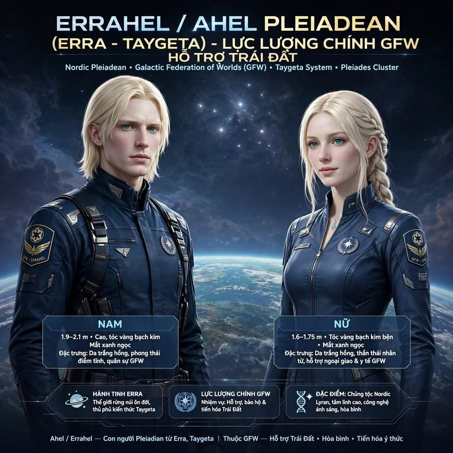
T-Marhu / Taal Pleiadean (Hành tinh T-Mar — Taygeta 3)
- Hình dáng & Chiều cao: Cao 1,75m – 1,9m; da bánh mật/trắng; tóc nâu/đen; mắt to tròn trong suốt.
- Đặc điểm Sinh học & Giác quan: Ăn đa dạng (omnivore), mật độ thể xác nặng hơn Ahel. Tuổi thọ 500 – 700 năm.
- Đặc tính & Vai trò Thiên hà: Hòa bình; phụ trách hành chính và ngoại giao GFW.
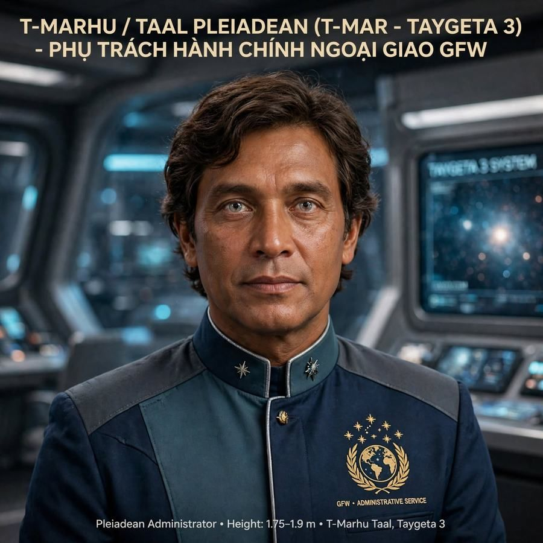
Taal-Shiar (Hành tinh Taalihara — Alcyone)
- Hình dáng & Chiều cao: Cao 1,75m – 1,85m; diện mạo hoàn toàn giống người Trái Đất (da bánh mật/trắng, tóc nâu).
- Đặc điểm Sinh học & Giác quan: Sinh học bị can thiệp công nghệ, cấy ghép vi mạch thần kinh liên kết ma trận AI.
- Đặc tính & Vai trò Thiên hà: Tiêu cực/Ly khai; hợp tác với Tập thể Bò sát Ciakahrr làm chiến binh cấy ghép công nghệ.
Alkhorhu / Noor (Hành tinh Alkhorat — Taygeta 5)
- Hình dáng & Chiều cao: Khổng lồ cao 2,2m – 2,7m; da trắng nhạy cảm; tóc đỏ rực hoặc vàng bạch kim; mắt xanh lam/xám.
- Đặc điểm Sinh học & Giác quan: Tim dễ bị tổn thương do khung xương phát triển quá nhanh. Tuổi thọ 500 – 700 năm.
- Đặc tính & Vai trò Thiên hà: Hòa bình; tổ tiên người khổng lồ tóc đỏ.
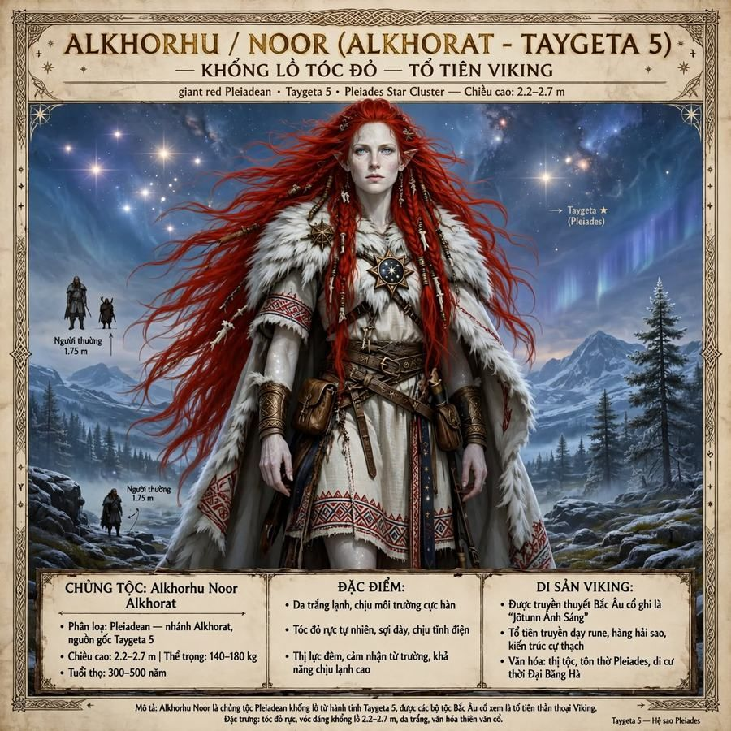
D'Akoorhu / D'Akoori (Hành tinh Dakoorat — Taygeta 10)
- Hình dáng & Chiều cao: Thể dĩ thái / quang phổ lơ lửng 9D, màng tinh thể bán trong suốt.
- Đặc điểm Sinh học & Giác quan: Không có thể xác thô; hấp thụ trực tiếp trường năng lượng plasma. Tuổi thọ vô hạn.
- Đặc tính & Vai trò Thiên hà: Hòa bình; Bậc thầy hướng dẫn tâm thức cao cấp.
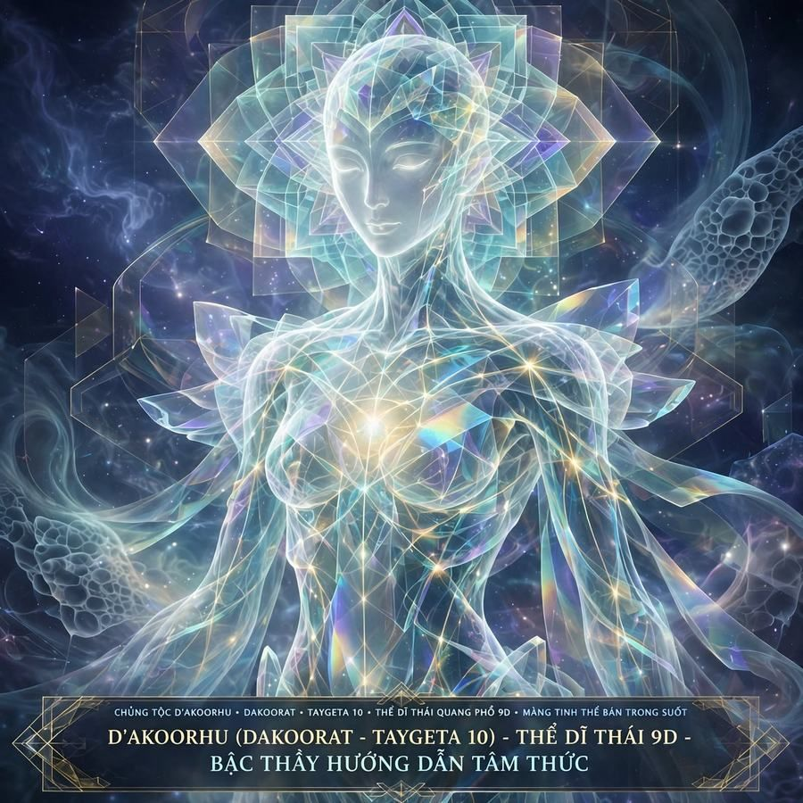
Enghan (Hệ sao Elektra)
- Hình dáng & Chiều cao: Cao 2,0m – 2,3m; cơ bắp dũng mãnh; da trắng, tóc vàng bạch kim dài, mắt xanh lam rực rỡ.
- Đặc điểm Sinh học & Giác quan: Mã gen không tương thích phối giống trực tiếp với người Trái Đất.
- Đặc tính & Vai trò Thiên hà: Hòa bình; lực lượng quân sự bảo vệ Pleiades; gieo mầm văn hóa Viking cổ đại.
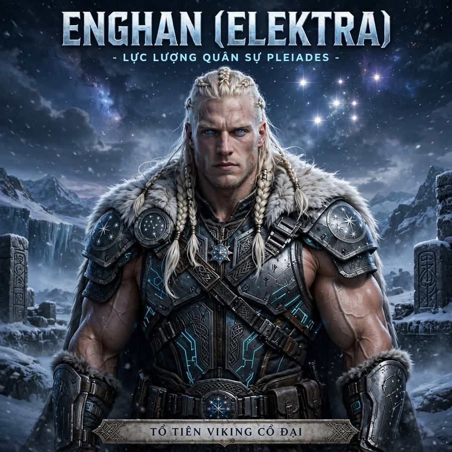
Atlantean Giants (Hệ sao Atlas)
- Hình dáng & Chiều cao: Đồ sộ cao 8,0m – 10,0m; da đồng rám nắng, tóc râu đen dày, mắt xanh/nâu.
- Đặc điểm Sinh học & Giác quan: Tim và phổi khổng lồ duy trì áp suất trọng lực lớn. Tuổi thọ hàng ngàn năm.
- Đặc tính & Vai trò Thiên hà: Hòa bình; từng xây dựng thuộc địa Atlantis sớm trên Trái Đất.
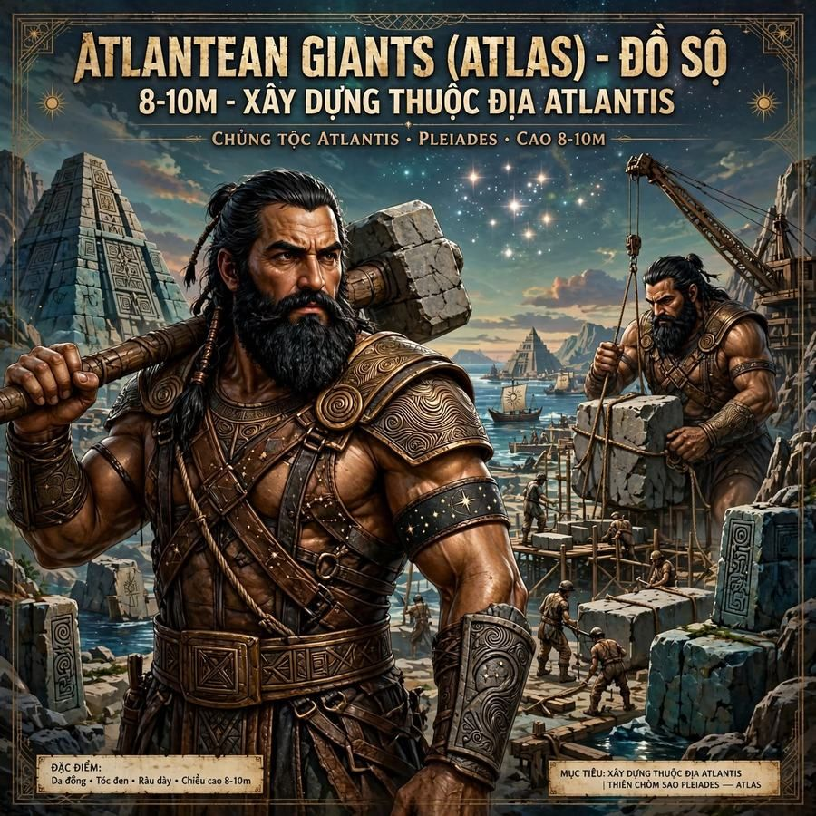
Celeano Elohimieth (Hệ sao Celeano)
- Hình dáng & Chiều cao: Cao 1,9m – 2,2m; da trắng ngà, tóc bạc/vàng nhạt, mắt xếch xanh chàm.
- Đặc điểm Sinh học & Giác quan: Giọng nói phát ra Ngôn ngữ biểu thanh Elohimieth điều biến cấu trúc không-thời gian.
- Đặc tính & Vai trò Thiên hà: Hòa bình; bảo tồn tri thức ngôn ngữ vô hướng.
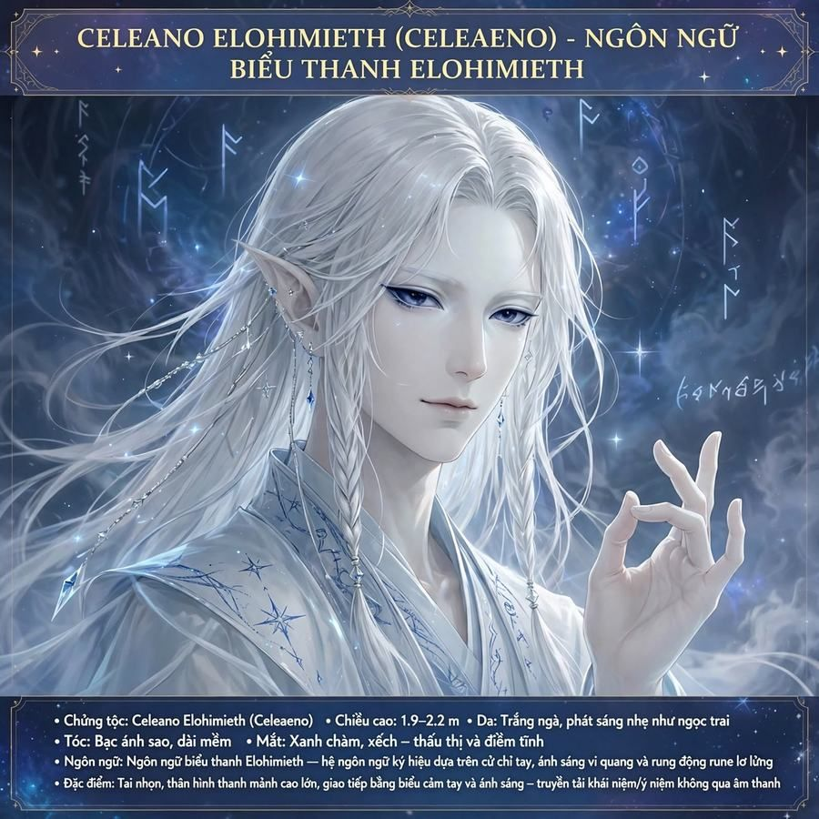
Asterope Elohim (Hệ sao Asterope)
- Hình dáng & Chiều cao: Cao 2,0m – 2,4m; da trắng phát quang, không có lông mày, mắt to dĩ thái.
- Đặc điểm Sinh học & Giác quan: Tồn tại ở mật độ 6D–7D, có khả năng hóa thành chùm sáng.
- Đặc tính & Vai trò Thiên hà: Hòa bình; dòng di truyền Elohim hòa bình.
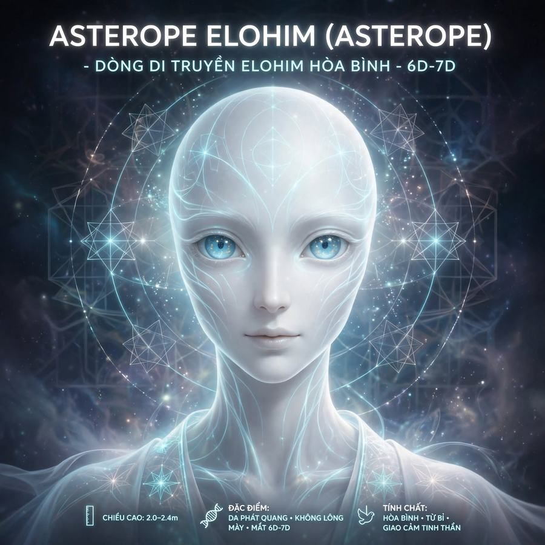
Ashaari (Hành tinh Alcyone)
- Hình dáng & Chiều cao: Cao 1,8m – 2,0m; da trắng mịn; tóc vàng bạch kim; mắt xanh ngọc.
- Đặc điểm Sinh học & Giác quan: Nhạy cảm với sóng đại dương tinh thể. Tuổi thọ 800 năm.
- Đặc tính & Vai trò Thiên hà: Hòa bình; bảo tồn đại dương dĩ thái.
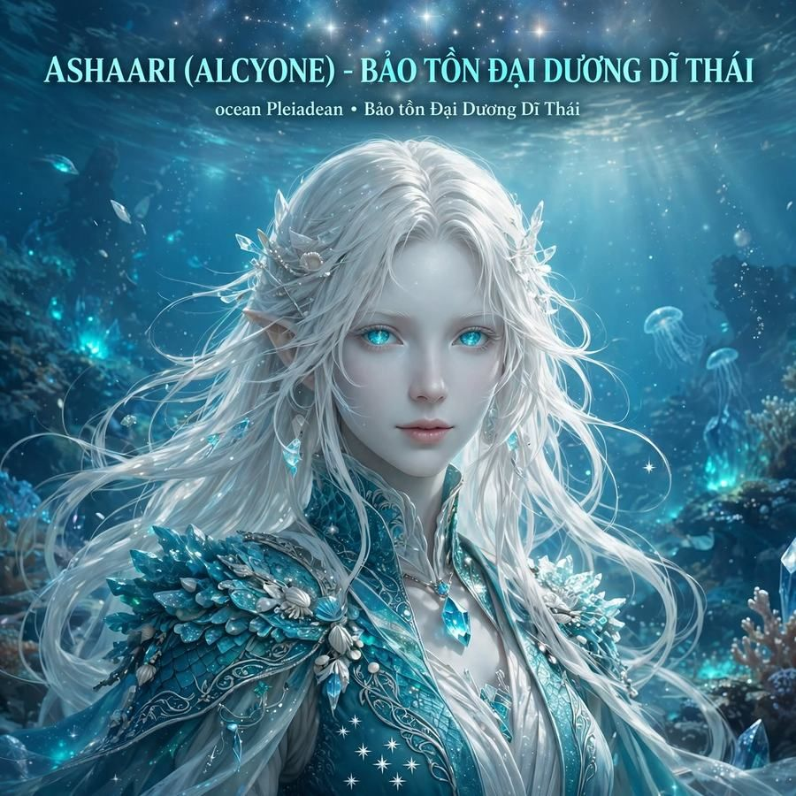
Hyadeans (Cụm sao Hyades / Taurus)
- Hình dáng & Chiều cao: Nhánh Ahel và Taal tị nạn; cao 1,8m – 2,1m; diện mạo da trắng/đồng thanh tú.
- Đặc điểm Sinh học & Giác quan: Thích nghi với môi trường 6 hệ sao thuộc Hyades.
- Đặc tính & Vai trò Thiên hà: Hòa bình; ẩn dật hoàn toàn khỏi chính trị thiên hà.
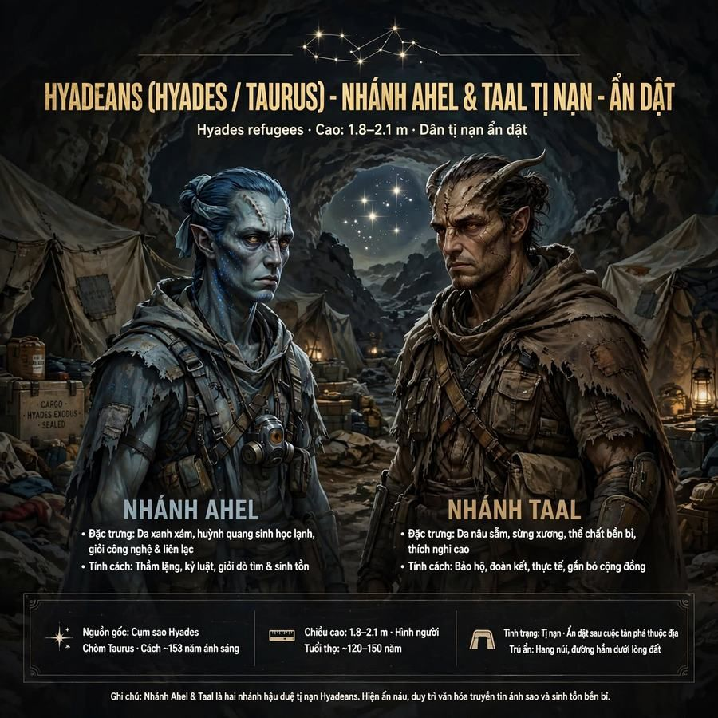
Ahil / Pleiadean Nordics (Hệ sao Ashaara)
- Hình dáng & Chiều cao: Cao 1,9m – 2,1m; da trắng sáng; tóc vàng kim; mắt xanh dương.
- Đặc điểm Sinh học & Giác quan: DNA 12 chuỗi, tuyến tùng lớn.
- Đặc tính & Vai trò Thiên hà: Hòa bình; thành viên nòng cốt GFW.
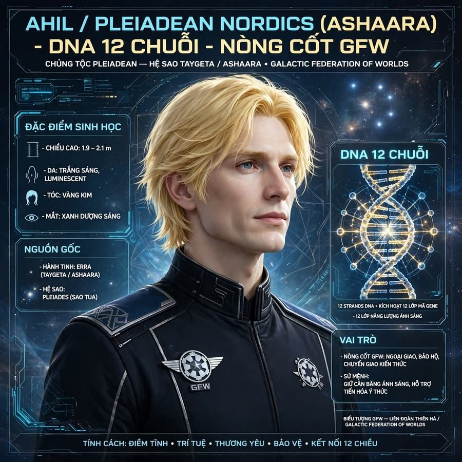